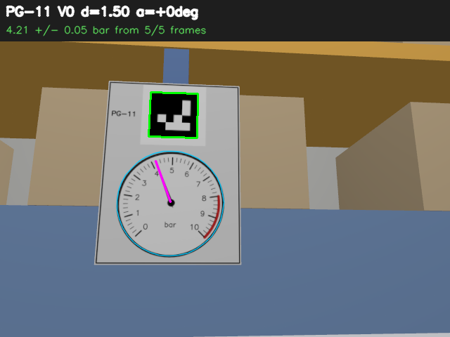
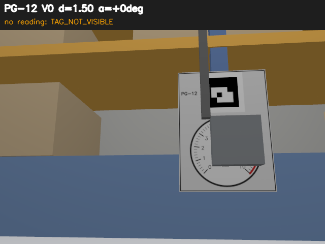
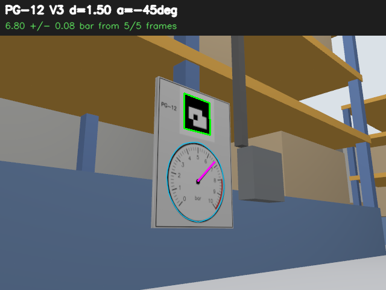
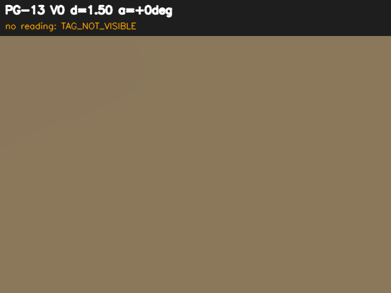
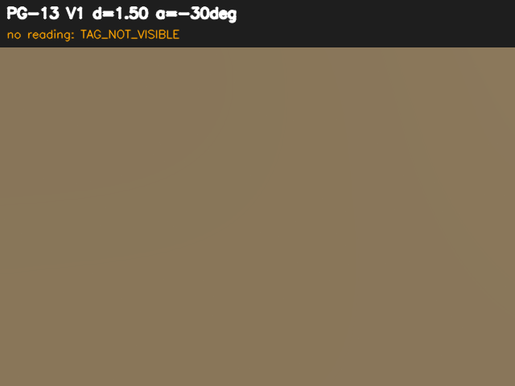
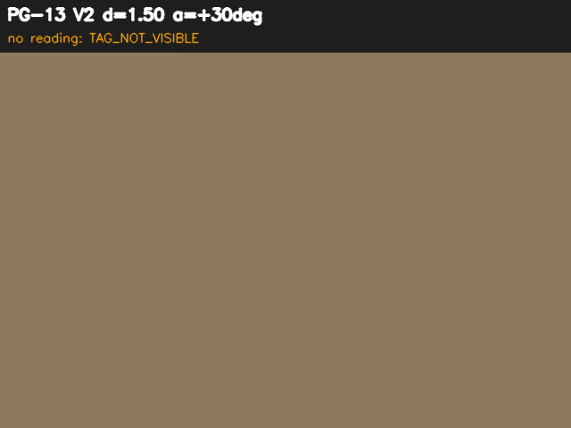
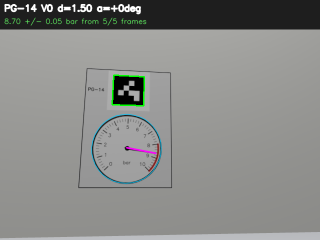

InspectLoop Gauge Inspection Report
warehouse_pressure_round · mission 20261115_130552_5c37 ·
state COMPLETED
213.6 s sim / 228.8 s wall ·
source: Gazebo Harmonic simulation, values read by OpenCV from simulated camera frames
Gauges 4: accepted 3, unresolved 1 ·
observations 11 · viewpoints 7 · decisions: ACCEPT: 3, RETRY_SAME: 4, MOVE_NEW: 3, UNRESOLVED: 1
| Gauge | Result | Obs. | Viewpoints | Decisions |
|---|
| PG-11 | 4.21 bar (heuristic σ 0.05), alarm NORMAL | 1 | 1 | ACCEPT |
| PG-12 | 6.80 bar (heuristic σ 0.08), alarm NORMAL | 3 | 2 | RETRY_SAME → MOVE_NEW → ACCEPT |
| PG-13 | UNRESOLVED [INSUFFICIENT_VISUAL_EVIDENCE] — TAG_NOT_VISIBLE persisted and no viewpoint/observation budget left | 6 | 3 | RETRY_SAME → MOVE_NEW → RETRY_SAME → MOVE_NEW → RETRY_SAME → UNRESOLVED |
| PG-14 | 8.70 bar (heuristic σ 0.05), alarm HIGH | 1 | 1 | ACCEPT |
PG-11 — Rack N1 - compressed-air header
4.21 bar (heuristic σ 0.05), alarm NORMAL
#1 V0 d=1.50 a=+0deg4.21 (σ_h 0.05) · flags: none
ACCEPT — 5 valid frames, sigma 0.052 <= 0.15

PG-12 — Rack S2 - hydraulic accumulator
6.80 bar (heuristic σ 0.08), alarm NORMAL
#1 V0 d=1.50 a=+0deg
no value · flags: TAG_NOT_VISIBLE
RETRY_SAME — possibly transient (TAG_NOT_VISIBLE): observe again from the same pose
#2 V0 d=1.50 a=+0degno value · flags: TAG_NOT_VISIBLE
MOVE_NEW — TAG_NOT_VISIBLE persisted after 1 retry(ies)

#3 V3 d=1.50 a=-45deg6.80 (σ_h 0.08) · flags: none
ACCEPT — 5 valid frames, sigma 0.076 <= 0.15

PG-13 — Rack N3 - sprinkler riser
UNRESOLVED [INSUFFICIENT_VISUAL_EVIDENCE] — TAG_NOT_VISIBLE persisted and no viewpoint/observation budget left
#1 V0 d=1.50 a=+0degno value · flags: TAG_NOT_VISIBLE
RETRY_SAME — possibly transient (TAG_NOT_VISIBLE): observe again from the same pose

#2 V0 d=1.50 a=+0deg
no value · flags: TAG_NOT_VISIBLE
MOVE_NEW — TAG_NOT_VISIBLE persisted after 1 retry(ies)
#3 V1 d=1.50 a=-30degno value · flags: TAG_NOT_VISIBLE
RETRY_SAME — possibly transient (TAG_NOT_VISIBLE): observe again from the same pose

#4 V1 d=1.50 a=-30deg
no value · flags: TAG_NOT_VISIBLE
MOVE_NEW — TAG_NOT_VISIBLE persisted after 1 retry(ies)
#5 V2 d=1.50 a=+30deg
no value · flags: TAG_NOT_VISIBLE
RETRY_SAME — possibly transient (TAG_NOT_VISIBLE): observe again from the same pose
#6 V2 d=1.50 a=+30degno value · flags: TAG_NOT_VISIBLE
UNRESOLVED — TAG_NOT_VISIBLE persisted and no viewpoint/observation budget left

PG-14 — East wall - boiler feed line
8.70 bar (heuristic σ 0.05), alarm HIGH
#1 V0 d=1.50 a=+0deg8.70 (σ_h 0.05) · flags: none
ACCEPT — 5 valid frames, sigma 0.054 <= 0.15
